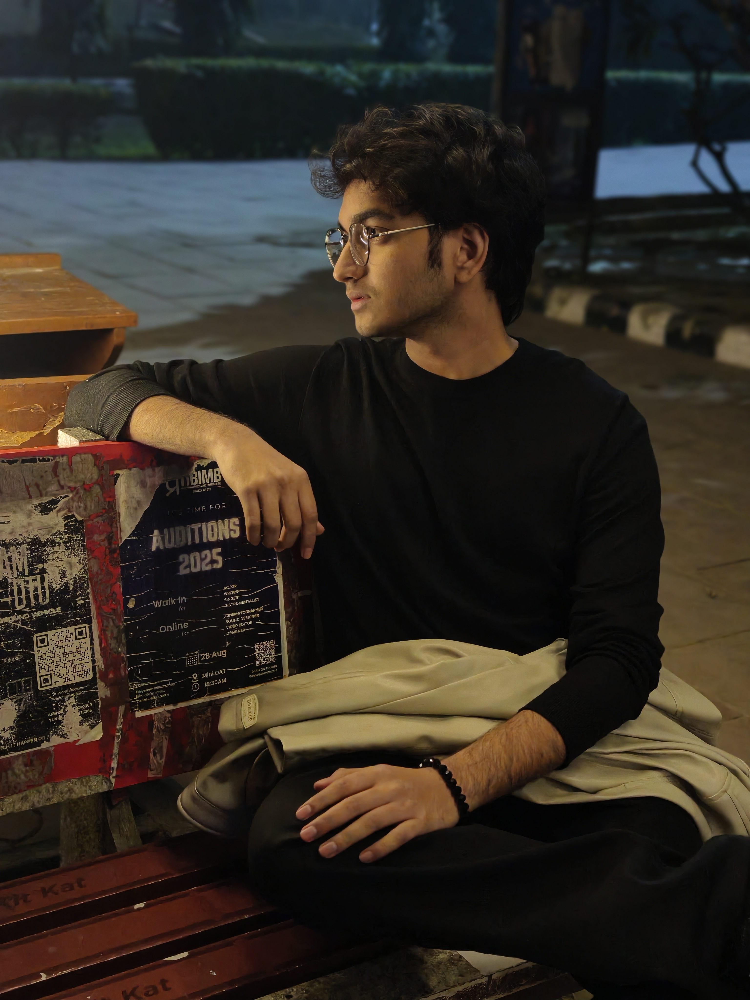

Robotics · AI/ML Researcher · Quant Enthusiast · Full-Stack Developer
I am a project-driven developer currently pursuing my B.Tech in Engineering Physics at Delhi Technological University. With a strong foundation in algorithms, competitive programming, and systems thinking, I'm passionate about tackling complex engineering challenges. My core interests span AI/ML, quant trading, robotics, cyber security, and full-stack development.
Leading cross-functional role in AI/ML, Computer Vision, and Autonomous Mechatronics. Hybrid mode engagement on live autonomous systems and intelligent monitoring projects.
Internship at DoT's 5G lab. Exploring 5G network architecture, spectrum technologies, and next-gen wireless communication systems.
Open-Source Development for GirlScript Summer of Code 2026.
Participated in HackerRank Orchestrate hackathon; built a Multi-Modal AI System.
Robotics, Computer Vision, DSA, and Competitive Programming.
Past contributions to Robotics, Quantum Computing, and social societies.
Ranked 3rd among all 1st-year students participating in the 5G and Beyond internship.
Awarded for excellence in the Student Partnership Program and serving as Campus Ambassador.
Top 10 teams out of 1000+ teams; Built KarigarConnect AI platform.
Intermediate & Intro to Machine Learning.
Simulated mobile robot in Gazebo for waypoint-following tasks. Utilizes ROS2 navigation stack, coordinate frame transformations, and PID control algorithms.
Machine learning pipeline combining satellite imagery and sensor data to estimate biomass using late-fusion neural networks and regression modeling.
Full-stack operations platform for attendance tracking and resource coordination employing relational algebra and RESTful API principles.
Computer vision pipelines for real-time semantic segmentation on UAVs, leveraging deep convolutional neural networks (CNNs).
High-performance dashboard providing live telemetry visualization utilizing WebSocket protocols for zero-latency data streaming.
Mathematical combat simulation testing evasion algorithms using 6-DOF kinematic equations and differential physics engines.
Navigation stacks and hardware interfaces for the ICMTC UGVC-2026 competition featuring robust control algorithms.
Digital twin and intelligence platform for autonomous lunar landing implementing spatial mapping and hazard analysis.
Simulating coordinated multi-agent drone swarms testing collision avoidance and fleet management protocols.
Personal intelligent voice assistant script for automating daily desktop tasks.
An automated content generator designed for the Hackfluence ecosystem.
Firmware for an ESP32-based custom macro keyboard with Bluetooth capabilities.
Custom annotated dataset for training YOLO object detection models optimized for drone footage.
Multi-modal evidence review software enabling structured data interpretation.
An intelligent study assistant utilizing LLM APIs for smart querying and note summarization.
CLI-based personal finance utility for logging and categorizing daily expenditures.
Responsive web dashboard displaying real-time weather metrics using public REST APIs.